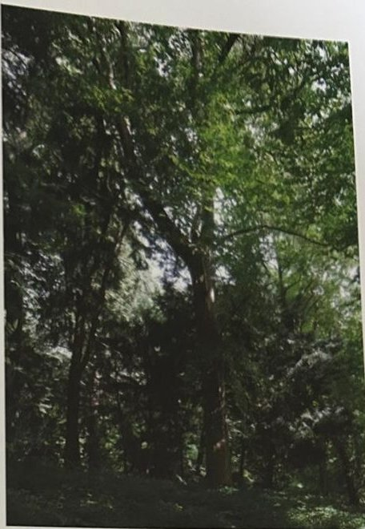
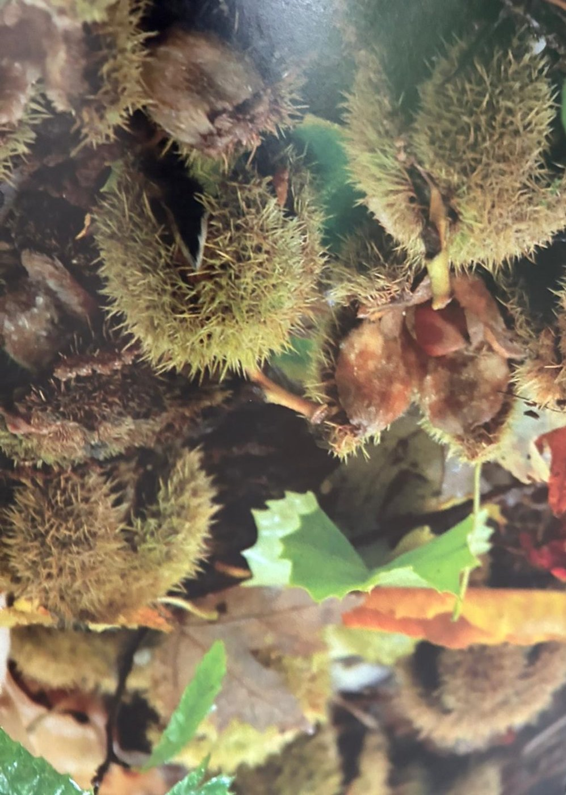

Groepen › Nieuwe Wereld
15. Oost-USA, Appalachengebergte

In de oerbossen van de Appalachen, waarvan er vanwege de doorgedreven mijn- en landbouw in de 19de en 20ste eeuw nog weinig is overgebleven, komen tot twintig verschillende boomsoorten voor in de toplaag. Dit zijn de zogenaamde Rich Mesophytic Forests, beschreven door de bekende bosecologe Emma Braun. Onder de eiken, esdoorns, essen, olmen en lindes mengen zich boomgeslachten die in Europa van nature niet voorkomen, zoals de tulpenboom, de gleditsia en de robinia. Waar wij magnolia’s kennen als al dan niet uit de kluiten gewassen sierstruiken, haalt de Komkommermagnolia de afmetingen van een volwassen bosboom. Dat geldt ook voor de Amerikaanse vogelkers, in West-Europa eerst ingevoerd als bodemverbeteraar in het bos en tegenwoordig bestreden als invasieve, alles verdringende bospest. Amerikaanse boomliefhebbers benijden ons de prachtige exemplaren van de Amerikaanse kastanje, een vroeger prominente bosaandeelhouder die vandaag in de Appalachen op jonge leeftijd aan een kwaadaardige schimmel ten onder gaat. Op grotere hoogte in het gebergte vindt men meer naaldhoutsoorten : de zeldzame Carolina hemlockspar vervangt er de Canadese hemlock, hij staat bovenin arboretumgroep 15 tussen de Rode spar en de Fraser zilverspar.
Uit het boek
3,20 ha · 52 soorten · 1440 bomen
- De Amerikaanse kastanjes hier horen mogelijk bij de dikste ter wereld: in Amerika werd de soort bijna uitgeroeid door de kastanjeziekte.
- Subgroepen naar hoogte: loofbos (15A), weymouthden en hemlock (15B), rode spar en Carolinahemlock (15C).


Bron: Geografisch Arboretum Tervuren. Een wereldreis rond bomen (2020), p. 154 en volgende.
Deelgroepen
- 15A – Appalachen, laaggebergte
- 15B – Appalachen, middengebergte
- 15C – Appalachen, hooggebergte
Soorten in deze groep (51)
- Abies fraseriAppalachenzilverspar · 354 bomen
- Tsuga canadensisOost-Amerikaanse hemlockspar · 313 bomen
- Betula alleghaniensisGele berk · 109 bomen
- Fraxinus pennsylvanicaGroene es · 88 bomen
- Quercus rubraAmerikaanse eik · 84 bomen
- Acer saccharumSuikeresdoorn · 41 bomen
- Robinia pseudoacaciaGewone robinia · 35 bomen
- Pinus strobusWeymouthden · 28 bomen
- Acer negundoVederesdoorn · 27 bomen
- Aralia spinosaDuivelswandelstok · 25 bomen
- Cornus alternifoliaAmerikaanse pagodekornoelje · 25 bomen
- Betula lentaSuikerberk · 24 bomen
- Acer pensylvanicumAmerikaanse slangenesdoorn · 20 bomen
- Carpinus carolinianaAmerikaanse haagbeuk · 19 bomen
- Crataegus crus-galliHanenspoormeidoorn · 18 bomen
- Prunus serotinaAmerikaanse vogelkers · 18 bomen
- Castanea dentataAmerikaanse kastanje · 17 bomen
- Acer rubrumRode esdoorn · 16 bomen
- Picea rubensRode spar · 15 bomen
- Tsuga carolinianaCarolina hemlockspar · 13 bomen
- Juglans cinereaGrijze walnoot · 12 bomen
- Liriodendron tulipiferaAmerikaanse tulpenboom · 12 bomen
- Tilia americanaAmerikaanse linde · 12 bomen
- Alnus serrulata11 bomen
- Amelanchier canadensisCanadees krentenboompje · 9 bomen
- Prunus virginianaVirginische vogelkers · 8 bomen
- Acer saccharinumZilveresdoorn · 7 bomen
- Amorpha fruticosaValse indigostruik · 7 bomen
- Quercus bicolorTweekleurige eik · 7 bomen
- Aronia melanocarpaZwarte appelbes · 6 bomen
- Magnolia tripetalaStinkende magnolia · 6 bomen
- Aesculus glabraKale paardekastanje · 5 bomen
- Gleditsia triacanthosAmerikaanse gleditsia · 5 bomen
- Magnolia acuminataKomkommermagnolia · 5 bomen
- Myrica pennsylvanica5 bomen
- Physocarpus opulifoliusGewone blaasjesvrucht · 5 bomen
- Quercus ellipsoidalisGrote-Mereneik · 5 bomen
- Carya tomentosaViltige hickory · 3 bomen
- Chionanthus virginicusAmerikaanse sneeuwvlokkenboom · 3 bomen
- Carya laciniosaGrootbladhickory · 2 bomen
- Kalmia latifolia2 bomen
- Maclura pomiferaOsagedoorn · 2 bomen
- Prunus caroliniana2 bomen
- Quercus palustrisMoeraseik · 2 bomen
- Acer spicatumAaresdoorn · 1 boom
- Aesculus paviaRode pavia · 1 boom
- Platanus occidentalisWesterse plataan · 1 boom
- Quercus coccineaScharlaken eik · 1 boom
- Quercus imbricariaNoordelijke lauriereik · 1 boom
- Rhododendron catawbiense1 boom
- Rhus typhinaAzijnboom · 1 boom
Tekst en foto: arboretum-tervuren.be (Koninklijke Schenking), met toestemming gebruikt.